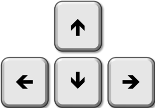

Use as teclas acima indicadas para mover a personagem, de forma a coletar os 1's
e 0's
de acordo com o que precisar no momento para traduzir o número decimal
para binário.
Avança de nível quando estiver concluído o número atual até chegar ao último
nível e ficar lá preso
até a personagem morrer, aumentando a pontuação cada vez
que termina um número.
Ajuda
